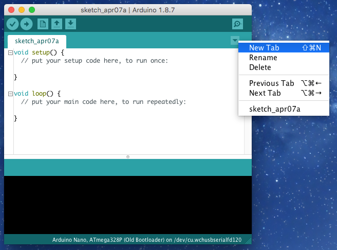
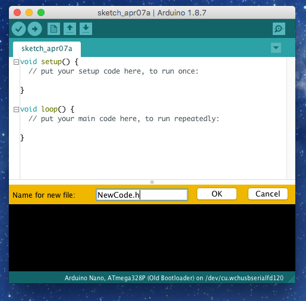
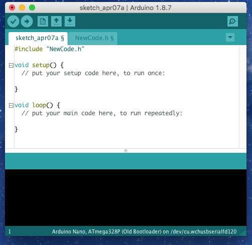

Code Bloat
I have been coding for the Arduino for a while now, and over time I have written a small collection of routines that can be reused in different projects.
I will share some of this code in future posts, but I thought it would be useful to show how you can add code to your project without ‘bloating’ the main source file too much.
If you find code on the Internet and want it including in your project, the easiest way is to just cut and paste it into your program. For a small snippet this might not be a problem, but over time it can contribute to a large and unwieldy codebase.
I’m very much of the opinion that ‘out of sight, out of mind’ is usually the best approach. If you have a function with a simple API, and which doesn’t change much over time, then moving it into its own file can be greatly beneficial. The code you spend the majority of your time reading remains small, and therefore easier to understand, develop, and debug.
Creating a Header File
A header file is just another file with code in it. It lives alongside your ‘main’ code file, but can be ‘#include’-ed such that the Arduino compiler treats it as if you’d just cut’n’pasted the content. With the benefit, of course, that you yourself don’t have to look at it all the time.
Step 1

The first step is to click on the ‘down arrow’ in the Arduino IDE, and then select ‘New Tab’.
Behind the scenes this will create a new file alongside your ‘main’ code file.
Step 2

Give your new file a name, ending in ‘.h’ (for ‘header’). Any valid file name will do, but it must be unique in your project. To maximize readability, try to ensure it accurately describes the code you’re going to put in it.
Now’s the time to write (/paste) your utility code.
Step 3

Now we need to add a reference to the new header file, so your ‘main’ code can ‘see’ it. To do this just add a line near the top of the source:
#include "HEADER.h"
…where HEADER is replaced with the name of your new file.
And there we go! You can now use the classes/functions define in tour header file as if they were in your ‘main’ file.
‘Include’ lines can be added to any of your files, allowing code to be reused several times – A ‘#include’-ed file can itself ‘#include’ other files. Just be sure you don’t end up creating a ‘circular dependency’ by having a pair of files ‘including’ each other.
Note: It is usually a good idea to add #pragma once to the first line of your header file. It ensures the compiler doesn’t try to compile the same file multiple times, which can can problems.
For example:
#pragma once
// Your code here.
.
.
.